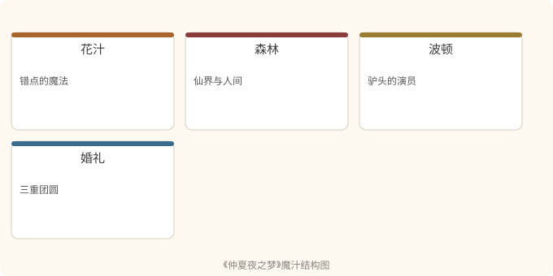

仲夏夜之梦
一、基本信息
| 作者 | 莎士比亚 |
|---|---|
| 成书/出版 | 约1595年（通说待核；作者页 B033/B007 口径：major_works 载'仲夏夜之梦'） William Shakespeare — Encyclopaedia Britannica（百科全书） |
| 国别/地区 | 英国 |
| 时代 | 近代 · 文艺复兴 |
| 体裁 | 喜剧 |
| 语言 | 英语 |

《仲夏夜之梦》魔汁结构图（主题·结构图）
二、创作背景
作者页（B033/B007）：莎士比亚 major_works 载'仲夏夜之梦、第十二夜、暴风雨'（作者页定位，详见 hamlet 条核对）。
题材（通说待核）：雅典森林中的花汁错点——两对恋人与仙王仙后的闹剧，织工波顿变驴。
三、内容脉络
魔汁误点：错位的爱恋（通说待核）。
'戏中戏'：织工们排演《皮拉摩斯与提斯柏》（通说待核）。
四、主要人物表
| 人物 | 身份 | 说明 |
|---|---|---|
| 帕克（迫克） | 精灵 | 魔汁的执行者（通说待核） |
| 波顿 | 织工 | 驴头主角（通说待核） |
五、主题与艺术特点
- 爱与梦幻的非理性（通说）。
- '戏中戏'与元戏剧（通说待核）。
- 想象力的胜利（通说）。
六、影响与评论
- 作者页：莎翁喜剧代表作（B033/B007 作者页口径）。
William Shakespeare — Encyclopaedia Britannica（百科全书） - 门德尔松同名序曲与戏剧配乐（1842——通说待核）。
William Shakespeare — Encyclopaedia Britannica（百科全书）
七、阅读建议
难点
- 仙界与人间双线。
- 押韵对白的节奏。
- 《仲夏夜之梦》（朱生豪译本，通说待核）。
- 英文原版（公有领域）。
莎翁喜剧首选入门。
八、待核实
- 首演年份与场合（贵族婚礼说待核）。
- 帕克/波顿人名核对。
- 门德尔松配乐年份待核。
本页主要来源
- William Shakespeare — Encyclopaedia Britannica（百科全书）
- Hamlet — Encyclopaedia Britannica (by David Bevington)（百科全书）
莎士比亚的其他收录作品：哈姆雷特